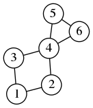
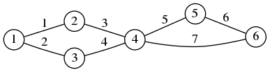
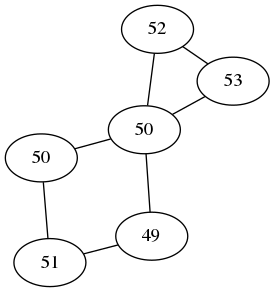
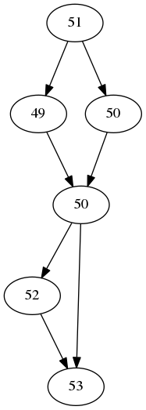
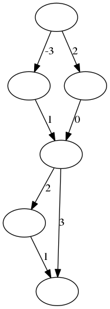

We describe a graph-theoretic analogue of vector calculus. The linear operators of vector calculus (gradient, divergence, laplacian) correspond to the matrices naturally associated to graphs (incidence matrix, adjacency matrix). This analogy is useful for formalizing the discretization of some problems in image and surface processing that are often defined in a continuous setting.
Vector calculus deals with functions and vector fields defined in \(\mathbf{R}^3\).
A function (or scalar field) is a map \(u:\mathbf{R}^3\to\mathbf{R}\). A vector field is a map \(\mathbf{v}:\mathbf{R}^3\to\mathbf{R}^3\). Vector fields are written in bold.
Let us fix some typical names for the coordinates. The coordinates of a point in \(\mathbf{R}^3\) are written as \((x,y,z)\). If \(\mathbf{v}\) is a vector field, then \(\mathbf{v}=(a,b,c)\) where \(a\), \(b\) and \(c\) are three scalar fields called the components of \(\mathbf{v}\). We denote the partial derivatives of a function using subindices, for example \(a_y:=\frac{\partial a}{\partial y}\).
The gradient of a function \(u\) is a vector field \(\nabla u\) defined by \[\nabla u = \left( u_x\ ,\ u_y\ ,\ u_z %\frac{\partial u}{\partial x}, %\frac{\partial u}{\partial y}, %\frac{\partial u}{\partial z} \right)\]
The divergence of a vector field \(\mathbf{u}=(a,b,c)\) is a scalar field \(\mathrm{div}(\mathbf{u})\) defined by \[\mathrm{div}(\mathbf{u}) = a_x + b_y + c_z\]
The curl of a vector field \(\mathbf{u}=(a,b,c)\) is another vector field \(\mathrm{curl}(\mathbf{u})\) defined by \[\mathrm{curl}(\mathbf{u}) = \left( c_y - b_z\ ,\ a_z - c_x\ ,\ b_x - a_y \right)\]
Finally, the laplacian of a scalar field \(u\) is the scalar field \(\Delta u\) defined by \[\Delta u = u_{xx} + u_{yy} + u_{zz}.\]
Notice that, except for the curl, all these operations can be defined in \(\mathbf{R}^N\). However, the curl is specific to three dimensions. There is a similar operator in two dimensions, which we call also the curl and computes a scalar field \(\mathrm{curl}(\mathbf{u})\) from a vector field \(\mathbf{u}=(a,b):\mathbf{R}^2\to\mathbf{R}^2\) \[\mathrm{curl}(\mathbf{u}) = b_x - a_y\] Notice that it is the last component of the 3D curl.
The curl is also defined in dimension 7. Let \(\mathbf{u}=(u^1,\ldots,u^7)\) be a vector field in \(\mathbf{R}^7\), then \[%\renewcommand*{\arraystretch}{1.5} \def\curlco#1#2#3#4#5#6{% {u^{#1}}_{#2}-{u^{#2}}_{#1}+ {u^{#3}}_{#4}-{u^{#4}}_{#3}+ {u^{#5}}_{#6}-{u^{#6}}_{#5}% } \mathrm{curl}(\mathbf{u}) = \left( \begin{matrix} \curlco{2}{4}{3}{7}{5}{6} \\ \curlco{3}{5}{4}{1}{6}{7} \\ \curlco{4}{6}{5}{2}{7}{1} \\ \curlco{5}{7}{6}{3}{1}{2} \\ \curlco{6}{1}{7}{4}{2}{3} \\ \curlco{7}{2}{1}{5}{3}{4} \\ \curlco{1}{3}{2}{6}{4}{5} \\ \end{matrix} \right)\] where a sub-index \(i\) denotes a partial derivative in the \(i\)-th dimension of \(\mathbf{R}^7\). And analogously we can define the 6-dimensional curl by taking the last component (resulting in a scalar field).
The most important identity is \(\Delta u = \mathrm{div}(\mathrm{grad}(u))\), that can be used also as the definition of \(\Delta\).
Other identities involving the curl are \(\mathrm{curl}(\nabla u)=0\) and \(\mathrm{div}(\mathrm{curl}(\mathbf{u}))=0\).
The functions \(u\) such that \(\nabla u=0\) on \(\mathbf{R}^3\) are the constants.
The vector fields \(\mathbf{v}\) such that \(\mathrm{curl}(\mathbf{v})=0\) are called conservative, irrotational or integrable. They are of the form \(\mathbf{v}=\nabla u\) for some function \(u\) called the potential of \(\mathbf{v}\).
The vector fields \(\mathbf{v}\) such that \(\mathrm{div}(\mathbf{v})=0\) are called divergence-free, volume-preserving, solenoidal or incompressible. They are of the form \(\mathbf{v}=\mathrm{curl}(\mathbf{u})\) for some vector field \(\mathbf{u}\) called the vector potential of \(\mathbf{v}\).
The scalar fields \(u\) such that \(\Delta u=0\) are called harmonic functions.
The following identities are immediate applications of the product rule for derivatives: \[\nabla(fg) = f\nabla g + g\nabla f\] \[\mathrm{div}(f\mathbf{g}) = f\mathrm{div}(\mathbf{g}) + \mathbf{g}\cdot\nabla f\]
The divergence theorem: \[\int_\Omega \mathrm{div}(\mathbf{g}) = \int_{\partial\Omega}\mathbf{g}\cdot\mathbf{ds}\]
Combining the divergence theorem with the product rule we obtain the integration by parts formula. \[\int_{\partial\Omega} f\mathbf{g}\cdot\mathbf{ds} = \int_\Omega f\mathrm{div}(\mathbf{g}) + \int_\Omega \mathbf{g}\cdot\nabla f\]
Thus, if at least one of the two functions vanishes on the boundary of \(\Omega\) \[0= \int_\Omega f\mathrm{div}(\mathbf{g}) + \int_\Omega \mathbf{g}\cdot\nabla f\] or, in another notation \[\left\langle f, \mathrm{div}(\mathbf{g}) \right\rangle = \left\langle -\nabla f, \mathbf{g} \right\rangle\] thus that the operators \(\mathrm{div}\) and \(-\nabla\) are adjoint to each other. Integrating by parts twice we obtain that the operator \(\Delta\) is self-adjoint.
A graph is \(G=(V,E)\) where \(V\) is a set called the vertices of \(G\), and \(E\) is a subset of \(V\times V\) called the edges of \(G\).
We assume always that the set \(V\) is finite, and its elements are numbered from \(1\) to \(n\). Thus, the set \(E\) is also finite (the cardinal is at most \(n^2\)) and we assume that the elements of \(E\) are numbered from \(1\) to \(m\).
 \(\displaystyle\begin{matrix} V = \{1,2,3,4,5,6\} \\ E = \{ \{1,2\},\{1,3\},\{2,4\},\{3,4\},\{4,5\},\{5,6\},\{4,6\} \} \end{matrix}\)
Given a graph of \(n\) vertices and \(m\) edges, the adjacency list is a matrix of \(m\) rows and \(2\) columns that contains the pairs of vertices connected by each edge. The entries of this matrix are integers on the set \(\{1,\ldots,n\}\). Thus, if the \(k\)-th row is \((i,j)\), this means that edge \(k\) connects vertices \(i\) to \(j\).
 \(\textrm{adjacency list} = \begin{pmatrix} 1 & 2 \\ 1 & 3 \\ 2 & 4 \\ 3 & 4 \\ 4 & 5 \\ 5 & 6 \\ 4 & 6 \\ \end{pmatrix}\)
The adjacency list is a very efficient representation for sparse graphs (where the number of edges is proportional to the number of vertices). However, it is not very interesting from the algebraic point of view. We will see in the following three other matrices that have a very rich algebraic interpretation.
Given a graph of \(n\) vertices and \(m\) edges, the adjacency matrix is a square matrix \(A=a_{ij}\) of size \(n\times n\). The entries of \(A\) are zeros and ones, with \(a_{ij}=1\) if there is an edge from \(i\) to \(j\) and \(a_{ij}=0\) otherwise.
\(A = \begin{array}{l|lllllll} V\backslash V & 1 & 2 & 3 & 4 & 5 & 6 \\ \hline 1 & 0 & 1 & 1 & 0 & 0 & 0 \\ 2 & 1 & 0 & 0 & 1 & 0 & 0 \\ 3 & 1 & 0 & 0 & 1 & 0 & 0 \\ 4 & 0 & 1 & 1 & 0 & 1 & 1 \\ 5 & 0 & 0 & 0 & 1 & 0 & 1 \\ 6 & 0 & 0 & 0 & 1 & 1 & 0 \\ \end{array}\)
Notice that this matrix has somewhat less information than the adjacency list, because the ordering of the edges is lost. Thus, there is a unique way to compute the adjacency matrix from the list, but many \(m!\) different ways to get the list from the matrix. We can chose an arbitrary canonical ordering of the edges (for example, in lexicographic order).
Let \(A\) be the adjacency matrix of a graph \(G\). If we sum the values of all the elements of the \(i\)-th row, we obtain the number of edges going out of vertex \(i\) (called the degree of the edge). Let us put the vector with all the degrees in the diagonal of a matrix \(D\); in octave/matlab notation \(\mathtt{D=diag(sum(A))}\). The Laplacian matrix of \(G\) is defined as \[L = A - \mathtt{diag}(\mathtt{sum}(A))\] In the typical case where \(A\) is symmetric with 0 on the diagonal, the matrix L is the same as A with minus the degree of each vertex on the diagonal entries.
\(L = \begin{array}{l|lllllll} V\backslash V & 1 & 2 & 3 & 4 & 5 & 6 \\ \hline 1 &-2 & 1 & 1 & 0 & 0 & 0 \\ 2 & 1 &-2 & 0 & 1 & 0 & 0 \\ 3 & 1 & 0 &-2 & 1 & 0 & 0 \\ 4 & 0 & 1 & 1 &-4 & 1 & 1 \\ 5 & 0 & 0 & 0 & 1 &-2 & 1 \\ 6 & 0 & 0 & 0 & 1 & 1 &-2 \\ \end{array}\)
Given a graph of \(n\) vertices and \(m\) edges, the incidence matrix is a rectangular matrix \(B=b_{ij}\) of \(m\) rows and \(n\) columns. The entries of \(B\) are zeros, ones and minus ones given by the edges of the graph: if the \(k\)-th edge goes from \(i\) to \(j\), then, on the \(k\)th row there are values \(-1\) and \(1\) on positions \(i\) and \(j\) respectively; there are zeros everywhere else.
\(B = \begin{array}{l|lllllll} E\backslash V & 1 & 2 & 3 & 4 & 5 & 6 \\ \hline 1 &-1 & 1 & 0 & 0 & 0 & 0 \\ 2 &-1 & 0 & 1 & 0 & 0 & 0 \\ 3 & 0 &-1 & 0 & 1 & 0 & 0 \\ 4 & 0 & 0 &-1 & 1 & 0 & 0 \\ 5 & 0 & 0 & 0 &-1 & 1 & 0 \\ 6 & 0 & 0 & 0 & 0 &-1 & 1 \\ 7 & 0 & 0 & 0 &-1 & 0 & 1 \\ \end{array}\)
Notice that the incidence matrix contains the same information as the adjacency list (including the order of the edges).
There is an interesting relationship between the incidence matrix and the Laplacian matrix, that can be checked algebraically: \[L = -B^TB\] This identity is the discrete analogue of \(\Delta=\mathrm{div\ grad}\), as we will explain below.
The incidence matrix \(B\) defined above is signed, on each row there are two non-zero entries whose values are \(-1\) and \(1\). Thus the sum of any row is zero. We can write the matrix \(B\) as \(B=B_1-B_0\), where the matrices \(B_0\) and \(B_1\) have only zeros and ones, with a single non-zero entry per row.
It will be useful later to consider the unsigned incidence matrix \(C\), defined as \(C=\frac{1}{2}(B_0 + B_1)\), or equivalently \(C=\frac{1}{2}|B|\). The rows of the matrix \(C\) sum to one.
The following relations are immediate to verify \[A = 2C^TC-B^TB/2\] \[\mathrm{deg} = 2C^TC+B^TB/2\] where \(\mathrm{deg}\) is an \(n\times n\) diagonal matrix, whose values are the degrees of each vertex.
Most of the constructions that we have described on the vector calculus reminder above have a direct correspondence in the case of graphs.
The correspondence between vector calculus and graph theory is laid out in the following table. The main idea is that scalar fields correspond to functions defined on vertices, and vector fields correspond to functions defined on edges.
| Vector calculus | Graph theory |
|---|---|
| Base space | Graph vertices \(V\) |
| Tangent space | Graph edges \(E\) |
| \(u:\Omega\to\mathbf{R}\) | \(u:V\to\mathbf{R}\) |
| \(\mathbf{v}:\Omega\to\mathbf{R}^3\) | \(\mathbf{v}:E\to\mathbf{R}\) |
| Laplacian operator \(\Delta\) | Laplacian matrix \(L\in\mathcal{M}_{n,n}(\mathbf{R})\) |
| gradient operator \(\nabla\) | incidence matrix \(B\in\mathcal{M}_{m,n}(\mathbf{R})\) |
| divergence operator \(\mathrm{div}\) | matrix \(-B^T\in\mathcal{M}_{n,m}(\mathbf{R})\) |
| \(\Delta=\mathrm{div\ grad}\) | \(L=-B^T B\) |
| scalar field \(u\) | \(u\in\mathbf{R}^n\) |
| vector field \(\mathbf{v}\) | \(\mathbf{v}\in\mathbf{R}^m\) |
| vector field \(\nabla u\) | \(Bu\in\mathbf{R}^m\) |
| scalar field \(\Delta u\) | \(Lu\in\mathbf{R}^n\) |
| scalar field \(\mathrm{div}(\mathbf{v})\) | \(-B^T\mathbf{v}\in\mathbf{R}^n\) |
| directional derivative \(\nabla u(\mathbf{a})\cdot(\mathbf{b}-\mathbf{a})\) | \(\nabla u (a,b)\) |
| \(\Omega\subseteq\mathbf{R}^3\) | \(\Omega\subseteq V\) |
| \(\partial\Omega\subseteq\mathbf{R}^3\) | \(\partial\Omega\subseteq E\) , defined as \(\partial\Omega=E\cap(\Omega\times\Omega^c)\) |
| \(\displaystyle\int_\Omega\mathrm{div}(\mathbf{v}) = \int_{\partial\Omega}\mathbf{v\cdot ds}\) | \(\displaystyle\sum_{a\in\Omega}\mathrm{div}(\mathbf{v})(a) = \sum_{e\in\partial\Omega}\mathbf{v}(e)\) |
| Elliptic PDE \(\Delta u = f\) | Linear system \(Lu=f\) |
| Parabolic PDE \(u_t = \Delta u\) | First-order Linear ODE System \(u_t=Lu\) |
| \(\textrm{div}(D\nabla u),\qquad D:\Omega\to\mathcal{M}_{3,3}(\mathbf{R})\) | \(-B^TDBu,\qquad D\in\mathcal{M}_{m,m}\) |
| \(g\Delta u,\qquad g:\Omega\to\mathbf{R}\) | \(GLu,\qquad G\in\mathcal{M}_{n,n}\) |
| pointwise product \(u v\) | Hadamard product \(f\odot g\) |
| pointwise product \(u\mathbf{v}\) | Hadamard product \(Cf\odot g\) |
| \(\nabla fg=f\nabla g + g\nabla f\) | \(B(f\circ g)=Cf\odot Bg + Cg\odot Bf\) |
| (nothing) | unsigned incidence matrix \(C\in\mathcal{M}_{m,n}(\mathbf{R})\) |
\(\)
The \(\mathrm{curl}\) operator cannot be defined on general graphs, but it can be defined on planar graphs, and it satisfies similar identities.
The simplest operator of vector calculus is the Laplacian, transforming scalar fields into scalar fields. It is the simplest because no vector fields are involved, only scalar fields.
Correspondingly, the simplest operator for graphs is also the Laplacian, transforming functions defined on vertices into functions defined on vertices. It is the simplest because no functions defined on edges are involved. Once we have chosen an ordering of the vertices, a scalar field is simply a vector \(u\in\mathbf{R}^n\), and the Laplacian operator is defined by a square matrix of size \(n\times n\).
Let \(G=(V,E)\) be a graph and \(u:V\to\mathbf{R}\) be a scalar field. The Laplacian of \(u\) is denoted by \(\Delta u\) and is defined as the scalar field \(\Delta u:V\to\mathbf{R}\) \[\Delta u(a) := \sum_{(a,b)\in E} u(b)-u(a)\] Notice that the sum is performed for a fixed vertex \(a\), and \(b\) varies through all the neighbors of \(a\) in the graph.
|  |
|
| The scalar field \(u\) | The scalar field \(\Delta u\) |
Just from the definition, we can deduce several properties of the laplacian
The sum of all the values of \(\Delta u\) is always zero
If \(u(a)\) is a local maximum, then \(\Delta u(a)<0\)
If \(u(a)\) is a local minimum, then \(\Delta u(a)>0\)
If \(u\) is constant, then \(\Delta u\) is zero
If we fix an ordering of the vertices, then the scalar fields \(u\) and \(\Delta u\) are two vectors in \(\mathbf{R}^n\), and the linear operator \(u\mapsto\Delta u\) is given by the matrix \(L=A-\mathtt{diag}(\mathtt{sum}(A))\). This follows directly by decomposing the definition of \(\Delta\) into two sums: \[\Delta u(a) = \sum_{(a,b)\in E} u(b) - \sum_{(a,b)\in E} u(a) = - u(a)\mathrm{degree}(a) +\sum_{(a,b)\in E} u(b)\]
Notice that the Laplacian has a nice interpretation. If we regard the values of \(u\) as a quantity distributed on the vertices of the graph, the condition \(\Delta u = 0\) says that the quantity is distributed evenly, or in equilibrium: the amount of quantity at each vertex equals the average amount over its neighbours. In particular, if \(u\) is constant then \(\Delta u = 0\).
Notice that the matrix \(L\) is always singular: a constant vector is an eigenvector of eigenvalue 0. If the graph has \(k\) connected components, then we have null vectors that are constant on each connected component, thus the matrix \(L\) has rank \(n-k\).
Recall that scalar fields are functions defined on vertices and vector fields are functions defined on edges. Thus, the gradient transforms a function defined on vertices into a function defined on edges. There is a very natural way of doing that: the value at each edge is obtained as the difference between the values at each side of the edge.
|  |  |
| The scalar field \(u\) | The vector field \(\nabla u\) |
More formally, let \(G=(V,E)\) be a graph and \(u:V\to\mathbf{R}\) be a scalar field. The gradient of \(u\) is the vector field \(\nabla u:E\to\mathbf{R}\) defined by \[\nabla u(a,b) := u(b) - u(a) \qquad \mathrm{for}\ (a,b)\in E\] The matrix of this linear map is the incidence matrix \(B\) of the graph. Think of the gradient \(\nabla u(a,b)\) as the directional derivative of \(u\) at point \(a\) in the direction of the vector from \(a\) to \(b\).
Now let \(\mathbf{v}:E\to\mathbf{R}\) be a vector field. The divergence of \(\mathbf{v}\) is the scalar field \(\mathrm{div}(\mathbf{v}):V\to\mathbf{R}\) defined by: \[\mathrm{div}(\mathbf{v})(a) := \sum_{(a,b)\in E}\mathbf{v}(a,b) -\sum_{(b,a)\in E}\mathbf{v}(b,a) \qquad \mathrm{for}\ a\in V\] The matrix of this linear map is minus the transposed incidence matrix of the graph \(-B^T\).
Notice that the identity \(\Delta=\mathrm{div\ grad}\) is trivial from the definitions above, since both sides are exactly \(\sum_{(a,b)\in E}u(b)-u(a)\). Thus, \(L=-B^TB\).
We do not need curls for our application, but let us say some words about them.
These graph-theoretic analogues are easier to understand when we use differential geometry instead of plain vector calculus. In that case, the discrete analogue of \(k\)-forms are functions defined over the \(k\)-cliques of the graph. Then the exterior derivative is readily built for all values of \(k\), and it contains the gradient, curl and divergence as particular cases. The particularity of 3-dimensional manifolds comes from the fact that in that in that case 1-forms and 2-forms have the same dimension and can both be interpreted as “vector fields”, thus the curl operator is defined from the exterior derivative \(d:\Omega^1\to\Omega^2\). In the case of graphs, we cannot in general identify functions defined on edges to functions defined on triangles, except in one particular case: when the graph is a triangulation. In that case, there is a construction that allows to define the curl of a vector field as a vector field, by traversing the two triangles at each side of an edge. The identity \(\mathrm{curl\ grad}=0\) is then the sum of 6 values that cancel pairwise, and so on. See the beautiful papers of Oliver Knill for a comprehensive coverage of this.
It is often necessary to deal with subset of graphs (for example, when we want to interpolate a function which is known only over some vertices). In order to do algebra with them, we model subsets as diagonal operators that contain the indicator function of the subset as the diagonal entries. This model is used for subsets of vertices and subsets of edges.
Notations: Let \(X=\{1,\ldots,n\}\) (or any finite ordered set) and \(Y\subseteq X\). Let \(a\) be a vector of length \(n\) and \(A\) a matrix of size \(n\times n\) . We use the following, somewhat ambiguous, abuses of notation:
\(\mathrm{diag}(A)\in\mathbf{R}^n\): the vector with the elements on the diagonal of \(A\) \(\mathrm{diag}(a)\in\mathbf{R}^{n\times n}\): the diagonal matrix whose diagonal is \(a\). \(\mathbf{1}_Y\in\mathbf{R}^{n}\): the indicator vector of the subset \(Y\) \(Y=\mathrm{diag}(\mathbf{1}_Y)\in\mathbf{R}^{n\times n}\): the diagonal operator of \(Y\)
This last notation is very convenient in image processing, because it represents point-wise multiplication by a binary image as a linear operator (with the same name as the binary image). The \(\mathrm{diag}\) operator has the same semantics as that of octave/matlab.
Let \(G=(V,E)\) be a graph with \(n\) vertices and \(m\) edges, and let \(\Omega\subseteq V\). To avoid introducing new letters, we denote also by \(\Omega=\omega_{ij}\) the \(n\times n\) matrix that contains the indicator function of this set in its diagonal: \(w_{ii}=1\) if \(i\in V\) and \(w_{jj}=0\) otherwise. Notice that the matrix \(I-\Omega\) corresponds to the complementary set \(\Omega^c\).
We define the boundary of a subset of vertices \(\Omega\subseteq V\) as the subset of edges \(\partial\Omega\subseteq E\) that go from \(\Omega\) to \(\Omega^c\). Notice that \(\partial\Omega=E\cap(\Omega\times\Omega)\) in set notation. Since \(\partial\Omega\) is a subset of edges, it corresponds to a diagonal matrix, also named \(\partial\Omega\), of size \(m\times m\). In matrix notation we have \[\partial\Omega=\mathrm{diag}(B\mathrm{diag}(\Omega))\] where \(B\) is the incidence matrix of the graph. We can also write \(\displaystyle\mathbf{1}_{\partial\Omega}=B\mathbf{1}_\Omega\).
Now that we have described the differential and boundary operators operator in matrix form, it is immediate to write the discrete analogues of several linear PDE. This is very beautiful because the analytic properties of the corresponding PDE are recovered by elementary linear algebra.
3.6.1. Laplace equation on the whole graph: \[Lu=0\] If the graph is connected, the matrix \(L\) has rank \(n-1\) thus its kernel is one-dimensional, corresponding to the constant solutions \(u=c\).
3.6.2. Poisson equation on the whole graph, with data \(f:V\to\mathbf{R}\): \[Lu=f\] has a unique solution unless \(f\) is constant.
3.6.3. Laplace equation on a subset \(\Omega\subseteq V\), with Dirichlet boundary conditions \(f:\Omega^c\to\mathbf{R}\): \[\Omega Lu + (I-\Omega)(u-f)=0\] Notice that this is written as an \(n\times n\) linear system, but it has a diagonal part corresponding to the values of \(u\) outside of \(\Omega\). Notice also that the values of \(f\) at the vertices that have no neighbors in \(\Omega\) only appear in the diagonal part. The values of \(f\) inside \(\Omega\) do not appear at all (are cancelled out).
3.6.4. Laplace equation on a subset \(\Omega\subseteq V\), with Neumann boundary conditions \(g:\partial\Omega\to\mathbf{R}\): \[\Omega Lu + (\partial\Omega)(\nabla u - g)=0\] Or equivalently, by developing the boundary and gradient operators, \[\left[\Omega L + \mathrm{diag}(B\mathrm{diag}(\Omega))B\right]u =\mathrm{diag}(B\mathrm{diag}(\Omega)) g\] or, in an alternative notation \[(\mathrm{diag}(\mathbf{1}_\Omega) L + \mathrm{diag}(B\mathbf{1}_\Omega))B)u =\mathrm{diag}(B\mathbf{1}_\Omega) g\]
3.6.5. Heat equation on the whole graph with initial condition \(u_0:V\to\mathbf{R}\): \[\begin{cases} u_t & =Lu \\ u(0) & = u_0 \end{cases}\] This is a system of \(n\) first-order linear differential equations with constant coefficients. It has a closed-form solution using the matrix exponential \(u=e^{tL}u_0\).
3.6.6. Heat equation with source term \(f:V\to\mathbf{R}\) and initial condition \(u_0:V\to\mathbf{R}\) \[\begin{cases} u_t & =Lu+f \\ u(0) & = u_0 \end{cases}\] It has likewise a closed-form solution \(u=e^{tL}(u_0-L^{-1}f)-L^{-1}f\). Notice that \(L^{-1}f\) only makes sense when \(f\) is not a constant vector.
3.6.7. Other combinations are possible, and easy to deduce from the simpler cases: Poisson and Heat equation on subsets with various boundary conditions, etc.
The isotropic case of “anisotropic” diffusion in image processing is modelled by terms of the form \(g\Delta u\), where \(g\) is a positive-real valued function on \(\Omega\). In the case of graphs, the function \(g\) corresponds to a scalar field \(g:V\to\mathbf{R}\), which we associate to a diagonal \(n\times n\) matrix \(\tilde g\) with the values of \(g\). Then these terms become \(\tilde gL u\) in the corresponding discrete model.
Truly anisotropic diffusion comes from terms of the form \(\mathrm{div}(D\nabla u)\), where the diffusivity \(D\) is a field of positive-definite symmetric matrices defined over \(\Omega\). In the case of graphs, we have a matrix \(\tilde D\), which is also diagonal, but now of size \(m\times m\). Then these terms become \(\mathrm{div}(D\nabla u)\) in the discrete model. Or, in matrix form, \(B^TDBu\).
Integral calculus can be generalized readily to graphs. Integrals are replaced by sums over a finite domain, and the various identities of integral calculus (e.g., the divergence theorem) become immediate matrix identities.
Let \(G=(V,E)\) be a graph with \(V=\{1,\ldots,n\}\) and \(E=\{1,\ldots,m\}\)
Let \(\Omega\subseteq V\) and let \(f:V\to\mathbf{R}\) be a scalar field. The integral of \(f\) over \(\Omega\) is defined as \[\int_\Omega f=\sum_{p\in \Omega}f(p)\] in matrix notation we have \(\int_\Omega f := \mathrm{sum}(\Omega f).\) Notice that here \(f\) is a vector of length \(n\), \(\Omega\) is an \(n\times n\) matrix, and we are computing the sum of all the components of the vector \(\Omega f\) to obtain a single number. Notice that \(f\) must be defined everywhere, but only the values inside \(\Omega\) are used; thus, we could have defined \(f\) only inside \(\Omega\).
An interface inside a graph is defined as a set of edges \(S\subseteq E\). Given a vector field \(\mathbf{v}:E\to\mathbf{R}\) we define the flow of \(\mathbf{v}\) through \(S\) \[\int_S \mathbf{v\cdot ds} := \sum_{e\in S}\mathbf{v}(e)\] or, in matrix notation, \(\int_S \mathbf{v\cdot ds}=\mathrm{sum}(\tilde S \mathbf{v})\) where \(\tilde S\) is the diagonal matrix containing the indicator function of \(S\). An interesting particular case happens when \(S\) is the boundary of some region \(\Omega\). We have seen above that the matrix \(\tilde S\) is then equal to \(\mathrm{diag}(B\mathrm{diag}(\Omega))\). This observation leads to the graph divergence theorem that says that \[\int_{\partial\Omega} \mathbf{v\cdot ds} =\int_\Omega\mathrm{div}(\mathbf{v})\] or, in matrix notation, \[\mathbf{1}_\Omega\cdot(B^T\mathbf{v}) = (B\mathbf{1}_\Omega)\cdot\mathbf{v}\] which is exactly the same thing, written differently.